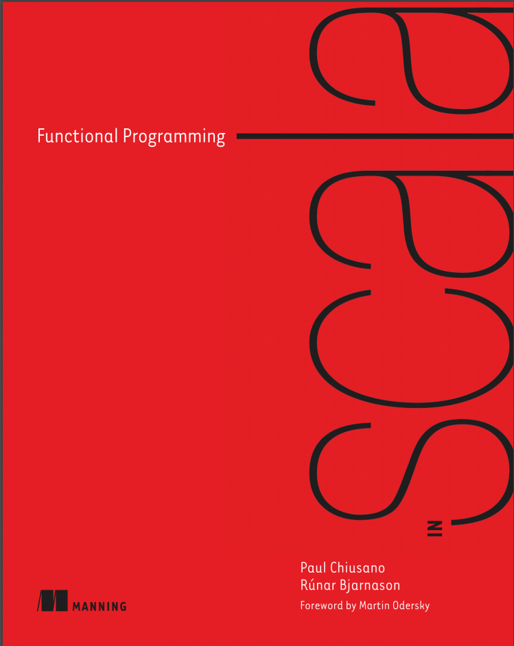
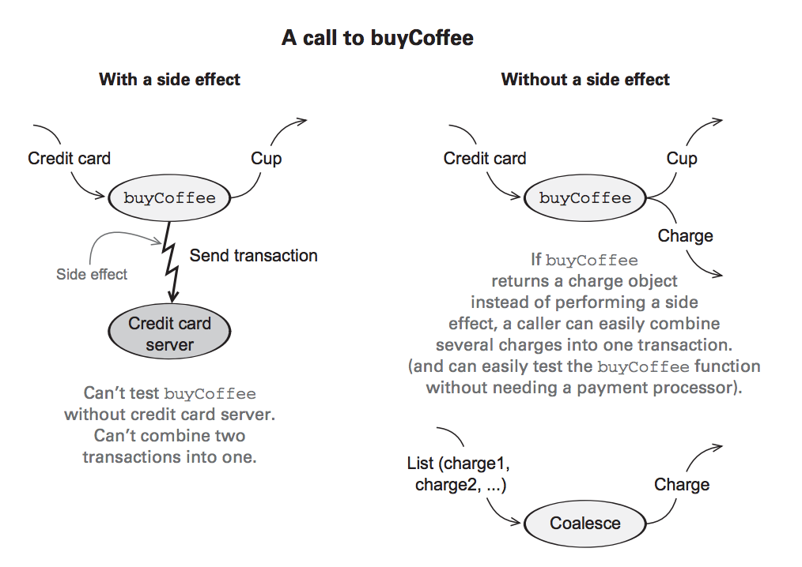

FP in Scala
Chapters 1 and 2
Created by @benkolera
Series Overview
The Book
Target Audience

Course Plan
Try to do 1-2 chapters per month (15 Chapters/9 months)
Hack nights for working through exercises and getting help
Plenty of help available via:
- fp-in-scala mailing list
- freenode#fp-in-scala
- freenode#bfpg
- https://github.com/fpinscala/fpinscala
Desired Outcomes
Help people get excited about and confident with FP.
Keep things interesting and give people plenty of support.
Moar Scala!
Moar haskell Ryan Gosling memes! ;)
via http://haskellryangosling.tumblr.com/
What is functional programming?
Programming with pure functions
Where a pure function cannot contain things like:
- Modifying a variable
- Modifying a data structure in place
- Setting a field on an object
- Throwing an exception
- Any IO (stdin,stdout,files, network, etc)
How is this possible / useful?

This is a normal reaction. It's weird, but bear with me.
Benefits of FP: Example
class Cafe { def buyCoffee(cc: CreditCard): Coffee = { val cup = new Coffee() cc.charge(cup.price) cup } }
But that's gross
It's ugly to test as you can't separate the inert CC details from the side effect.
No one writes production java code this way.
class Cafe {
def buyCoffee(cc: CreditCard, p: Payments): Coffee = {
val cup = new Coffee()
cc.charge(cup.price)p.charge(cc, cup.price)
cup
}
}
Side effects are anti-modular
This entire book is dedicated to ideas that allow you to maximise this kind of modularity!
Our first functional steps
def buyCoffee(cc: CreditCard): (Coffee, Charge) = {
val cup = new Coffee()
(cup, Charge(cc, cup.price))
}
Charge Definition
case class Charge(cc: CreditCard, amount: Double) {
def combine(other: Charge): Charge =
if (cc == other.cc)
this.copy(amount = amount + other.amount)
else
throw new Exception("Combined charges to different cards")
}
Spoiler 1: Functional Error handling in chapter 4.
Spoiler 2: Generalised way 'appending' things in chapter 10.
Reusing buyCoffee
def buyCoffees(cc: CreditCard, n: Int): (List[Coffee], Charge) = {
val purchases: List[(Coffee, Charge)] = List.fill(n)(buyCoffee(cc))
val (coffees, charges) = purchases.unzip
(coffees, charges.reduce((c1,c2) => c1.combine(c2)))
}
Code reuse, success!
Reasonability
Making the charge a first class entity rather than a side effect increased modularity.
But it also increases our ability to reason about why a function does by its type.
This makes the code safer to reuse because it's clear that there aren't weird side effects.
What is a pure function?
A pure function A => B maps every value of type A to exactly one value of type B
The value of B is only derived based on the value of A (not some external state).
intToString :: Int => String is an example.
Referencial Transparency
An expression e is referentially transparent if:
for all programs p
all occurences of e can be replaced by the result without affecting the meaning of p.
A function f is pure if the expression f(x) is referentially transparent for all referentially transparent x.
E.g. (2 + 3) + (2 + 3) == 5 + 5 == 10
Cafe 0.1 Violates RT
def buyCoffee(cc: CreditCard): Coffee = {
val cup = new Coffee()
cc.charge(cup.price) //This is discarded and not part of output
cup // Thus the return is just new Coffee()
}
Clearly, 'new Coffee()' and 'buyCoffee(cc)' are not equivalent.
Cafe 2.0 is RT
def buyCoffee(cc: CreditCard): (Coffee, Charge) = {
val cup = new Coffee()
(cup, Charge(cc, cup.price))
}
'buyCoffee(cc)' and '(new Coffee(),Charge(cc,cup.price))' are equivalent.
Equational Reasoning
Coding with pure functions allows our brains and our code to make these equational substitutions.
This provides a foundation for well-reasoned refactoring, optimisation and abstraction.
For algebraic thinking about code to the nth degree, check out Richard Bird's books: Thinking Functionally with Haskell and Pearls of Functional Algorithm Design!